Section 4: the Leave War posting sheet
Your last look before this section is built. It ships on its own, before the other three. Nothing here is built yet. Every picture is the real app, with only the new part drawn in. Green is what I recommend.
To answer: reply "Section 4: go, as recommended". Or tap Differently on any question or group of screens, then copy the reply from the bar at the foot and add your words.
Saber master admin, home 142 · Hunter 142's admin, Plan of 149, View of 150 · Kestrel 149's admin · Mako 150's admin · Ranger a 142 member · Cinch, a pilot, and Cotter, ground crew, the men being posted
A teal dashed ring marks what is new in the app. As you ruled, "Transfer to Sqn" is left out of every picture until the Transfer step.
Open questions 4
- Q1"Undo post out": the app's plain button, and three designsA: the plain button with the Undo arrow
- Q2The sheet's title on an existing posting or a dragged range"Cinch Post out", the day only in the date box
- Q3Getting the leave buttons back after opening a postingTwo presses on the day, as the app does today
- Q4The "Delete Cinch?" card: its Delete button’s colourDashed grey, as you ruled for every Leave War sheet
What this section builds 4 groups
- 1Post out from a daythe sheet as it opens, each choice, Delete, the last admin, an error, a ground-crew man
- 2Post out from a dragged rangethe same sheet
- 3An existing posting's sheetUndo post out, Undo post in
- 4Post inthe same shape
- ·Not drawn, and why
The open questions
Q1. "Undo post out": the app's plain button, and three designs new drawing
A, the app's plain button with the top bar's Undo arrow.
When this happens: Hunter posted the wrong man out, or the posting was cancelled. He taps one of Cinch's hatched days after 14 Dec and takes the posting back. A few times a year at most.
You asked: what is the app's plain button? It is the quiet dark-grey button with a thin grey edge and light-grey words. "Move" on a day's leave sheet is one, with a small teal arrow in front. "Delete" beside it is the same button with a dashed edge. Nothing drawn here; this is the app today.
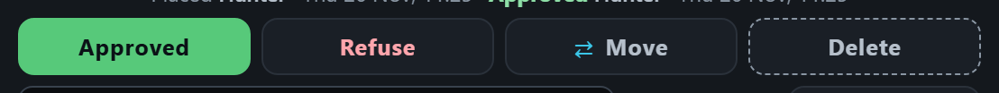
Today, desktop: "Move" is the plain button; "Delete" the same with a dashed edge.
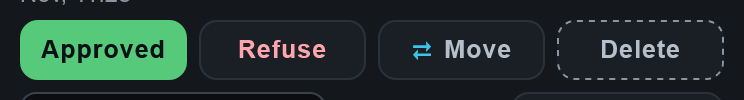
Today, phone: the same row.
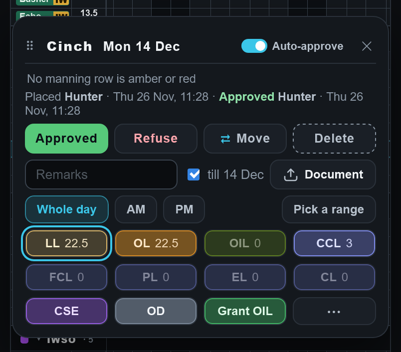
Today, phone: the whole sheet the row comes from, Cinch's day of LL on 14 Dec.
Three designs for "Undo post out", each made from one of those two buttons. Only the button is ringed. All three drop "(PO)": the box just above already says "PO from". "Place leave or OIL here instead…" is gone from the sheet, as you ruled, so "Undo post out" is the sheet's only button at its foot, where "Post out" stands on a new posting.
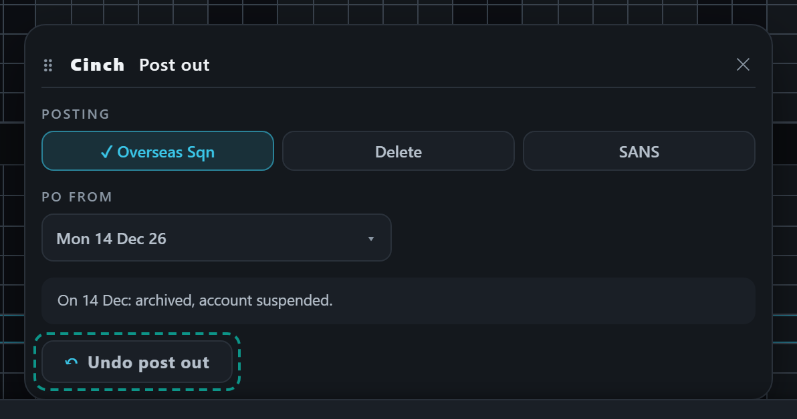
A, recommended, desktop: the plain button with the top bar's Undo arrow in teal, built as "Move" is. First at the foot.
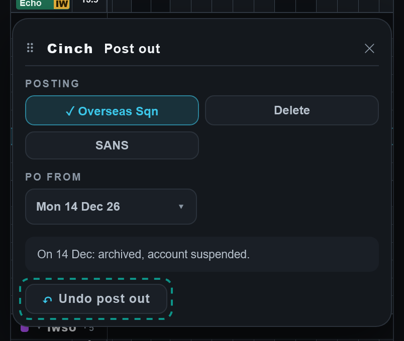
A, phone: the two buttons one over the other.
Why A: the arrow is the Undo you already know from the top bar, and the plain grey reads as pressable. Today's striped grey reads as switched off. It does not compete with the blue "Post out" of a new posting.
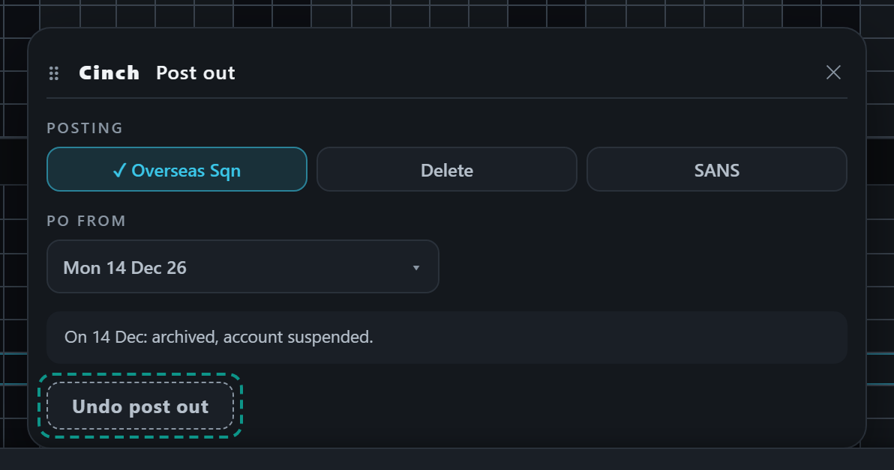
B, desktop: the "Delete" look, a dashed edge, no arrow. Quieter, but it borrows Delete's look for something that deletes nothing, two rows under the "Delete" choice.
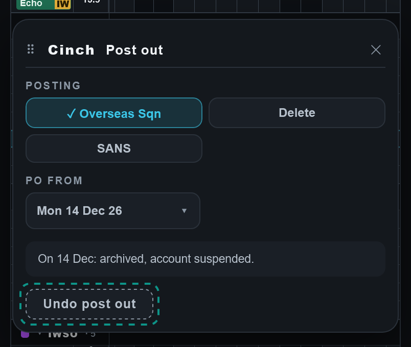
B, phone.
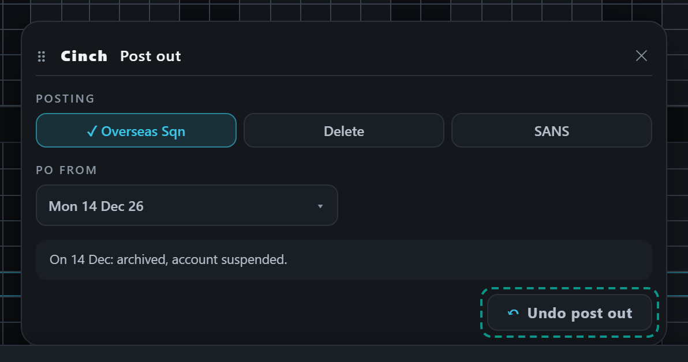
C, desktop: A's button set alone at the far right. With "Place leave or OIL here instead…" gone, nothing sits beside it, so its reason for standing apart has gone too.
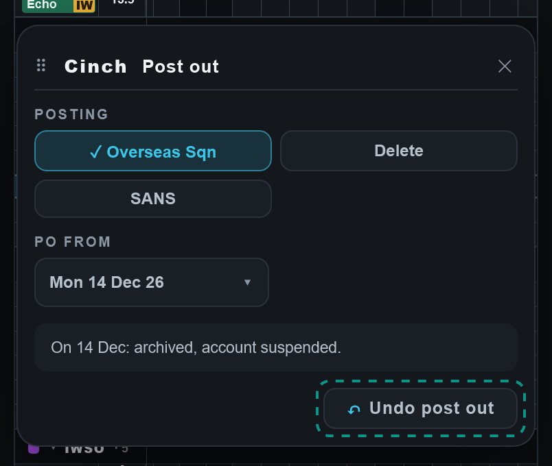
C, phone: on its own line at the right. Worth it only if the two feel too close on your phone; in A they stand one over the other already.
"Undo post in" on a posted-in man's sheet takes the same design; it is drawn with A (group 3).
↑ The list
Q2. The sheet's title on an existing posting or a dragged range new drawing
"Cinch Post out", the day only in the "PO from" box.
When this happens: Hunter taps one of Cinch's hatched days to change a posting, or drags across Cinch's 14 to 18 Dec and picks ⋯ then "Post out". A few times a year.
You ruled that a new posting's sheet names the act in its title, "Cinch Post out", because a day there would be wrong the moment the date is changed. Today these two sheets put a day in the title instead: "Cinch Tue 15 Dec" (the hatched day tapped) and "Cinch 14–18 Dec · 5 days" (the dragged range).
Drawn, an existing posting: titled "Cinch Post out"; the posting's date, 14 Dec, in the box.
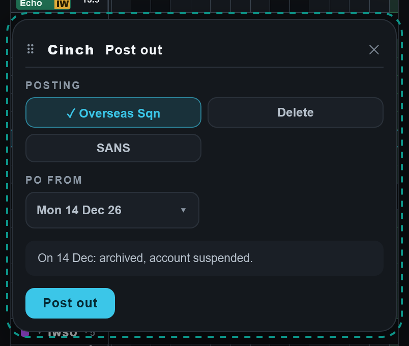
Drawn, from the dragged range: titled "Cinch Post out"; the range's first day, 14 Dec, in the box.
Recommended: the same title on all three sheets, so one sheet has one name. The other choice: keep the day or the range in the title on these two.
↑ The list
Q3. Getting the leave buttons back after opening a posting
Two presses on the day, as the app works today.
When this happens: Hunter opens "Post out" on Cinch's 14 Dec, then sees he meant to file leave. Rare.
You ruled that the leave buttons step aside while a posting is open, and that ✕ or pressing the day again gives them back. As the app is built today, a press on the calendar under any open sheet closes that sheet (read from the app, not yet tried on screen; the build checks it). So the first press on 14 Dec closes the posting, nothing posted, and the next press opens 14 Dec's sheet with its leave buttons.
Recommended: those two presses, the same as every other sheet. The other choice: one press goes straight from the posting to the day's leave sheet. That would make this one sheet behave unlike the rest. Not drawn: nothing new appears on screen.
↑ The list
Q4. The "Delete Cinch?" card: its Delete button’s colour new drawing
Dashed grey, as you ruled for Delete on every Leave War sheet.
When this happens: Hunter posts out a man who is leaving flying for good. He chooses "Delete" as the posting and presses "Post out"; the app asks "Delete Cinch?" before it does anything. A few times a year.
Today the card’s Delete button has a reddish edge and reddish words. You ruled that Delete on a Leave War sheet wears a dashed grey edge, never red; only a counter’s own Delete is red. This card was made after that ruling and does not follow it.
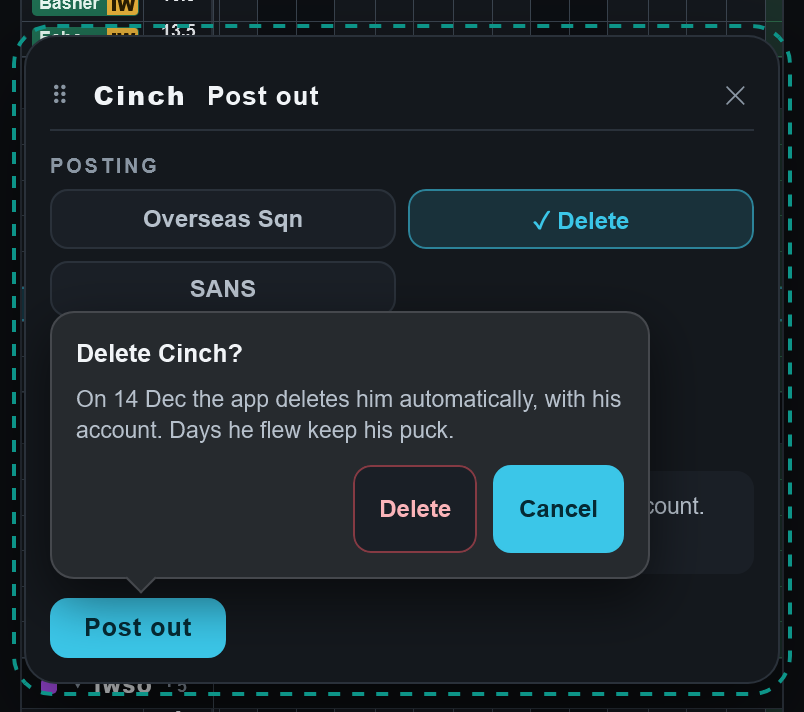
Today, phone: Delete in a reddish edge beside a blue Cancel.
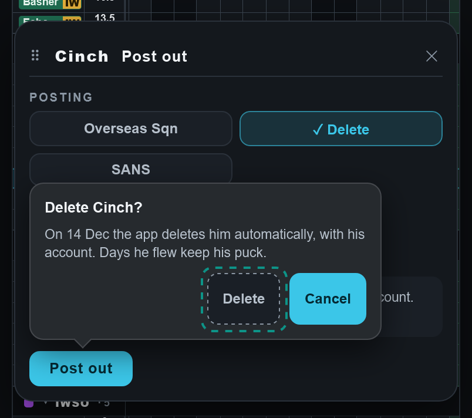
Recommended, phone: Delete in the dashed grey edge (ringed). Nothing else on the card changes.
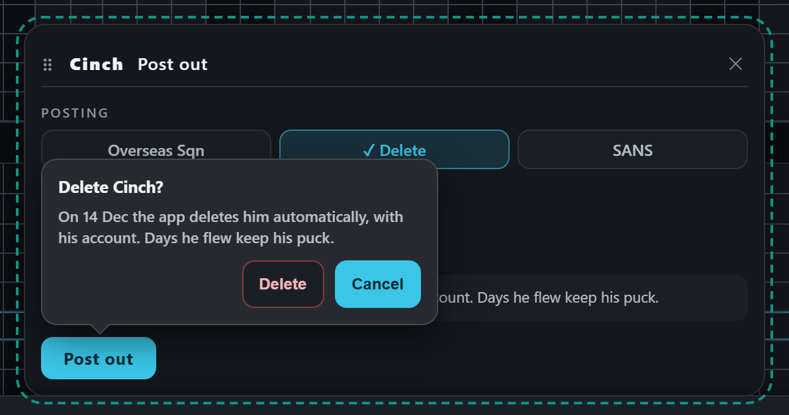
Today, desktop.
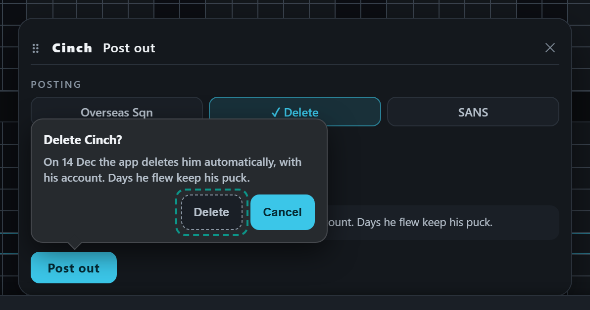
Recommended, desktop.
Recommended: dashed grey, so Delete looks the same on this card as on every other Leave War sheet. The card’s words and what Delete does stay as today.
The other choice: keep today’s look.
↑ The list
What this section builds
1. Post out from a day new drawing
Hunter presses Cinch's 14 Dec, then ⋯, then "Post out". The look you took in round 6, now without "Transfer to Sqn": three choices in a row at a desk, two and one on a phone.
 As it opens, desktop: Overseas Sqn chosen. "On 14 Dec: archived, account suspended." above a blue "Post out".
As it opens, desktop: Overseas Sqn chosen. "On 14 Dec: archived, account suspended." above a blue "Post out".
 As it opens, phone.
As it opens, phone.
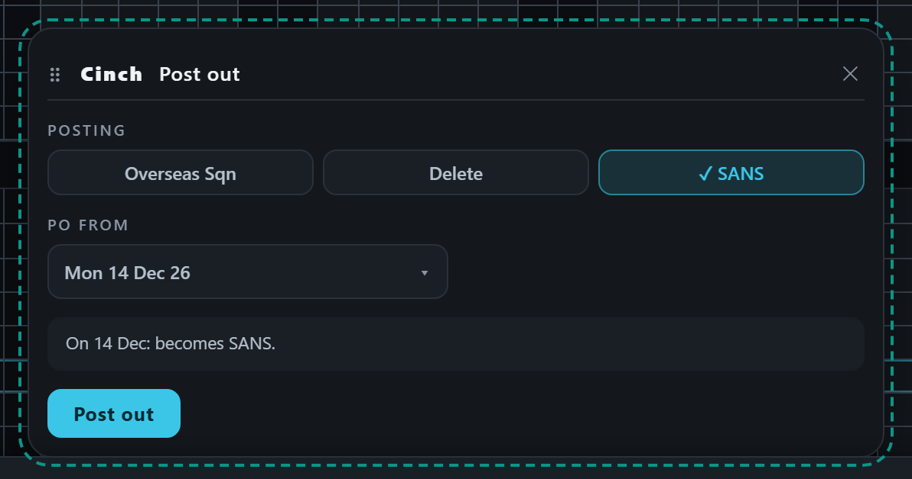
SANS chosen: "On 14 Dec: becomes SANS."
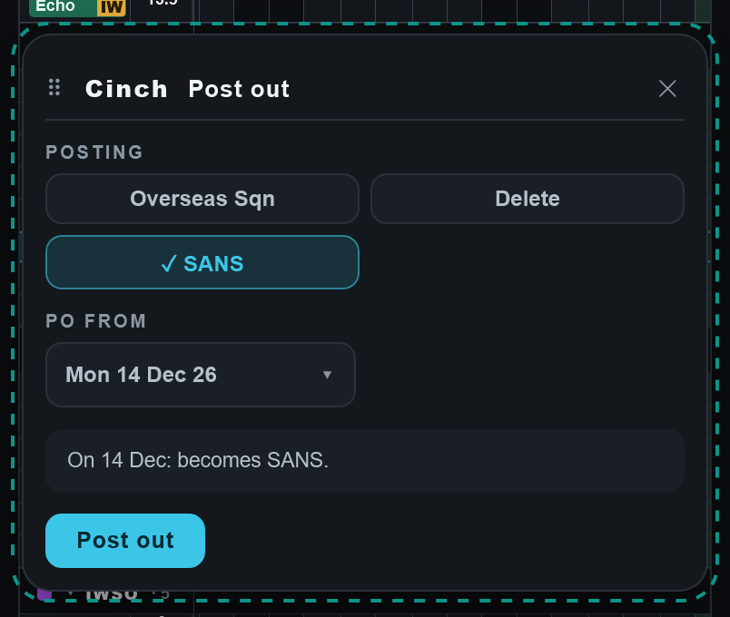
SANS chosen, phone.
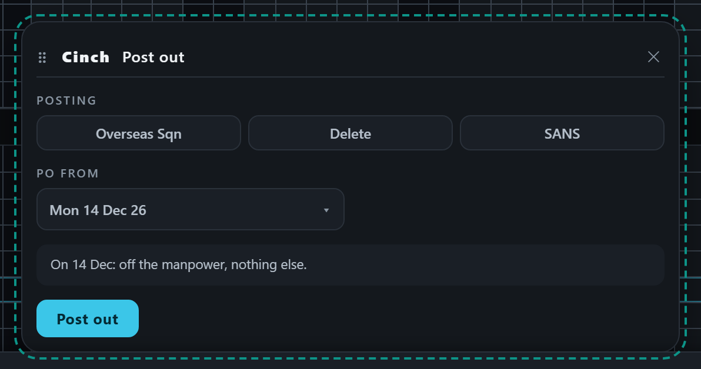
No choice made: "On 14 Dec: off the manpower, nothing else."
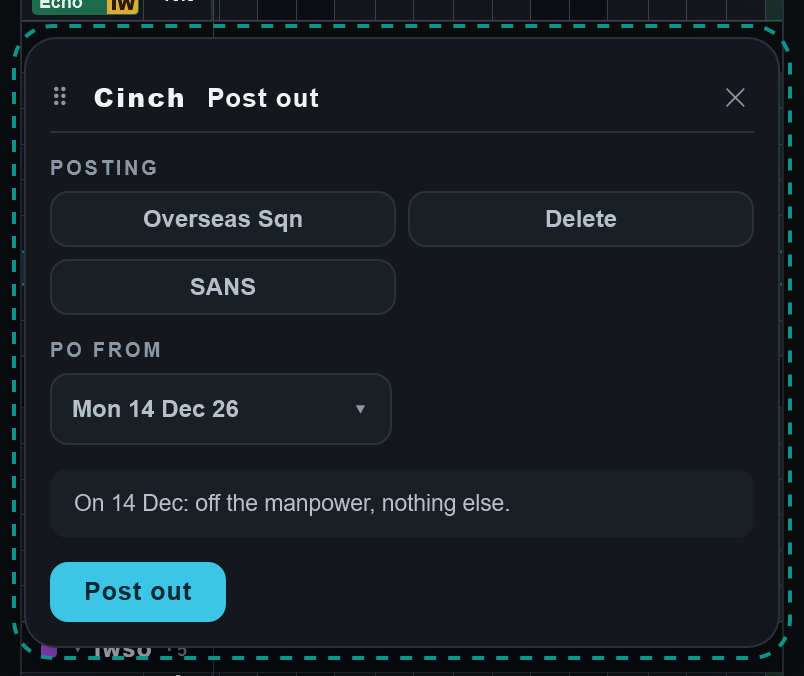
No choice made, phone.
Delete chosen, "Post out" pressed: the app's own "Delete Cinch?" card, standing above the button. Drawn with today's reddish Delete; its colour is Q4.
The same, phone.
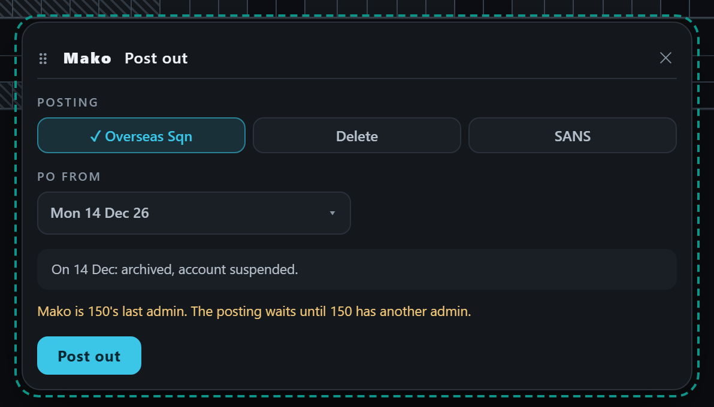
The last admin: Saber posts Mako out of 150. The app's amber line: "Mako is 150's last admin. The posting waits until 150 has another admin."
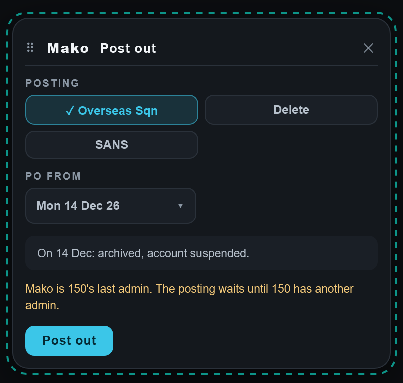
The same, phone: the line takes two lines.
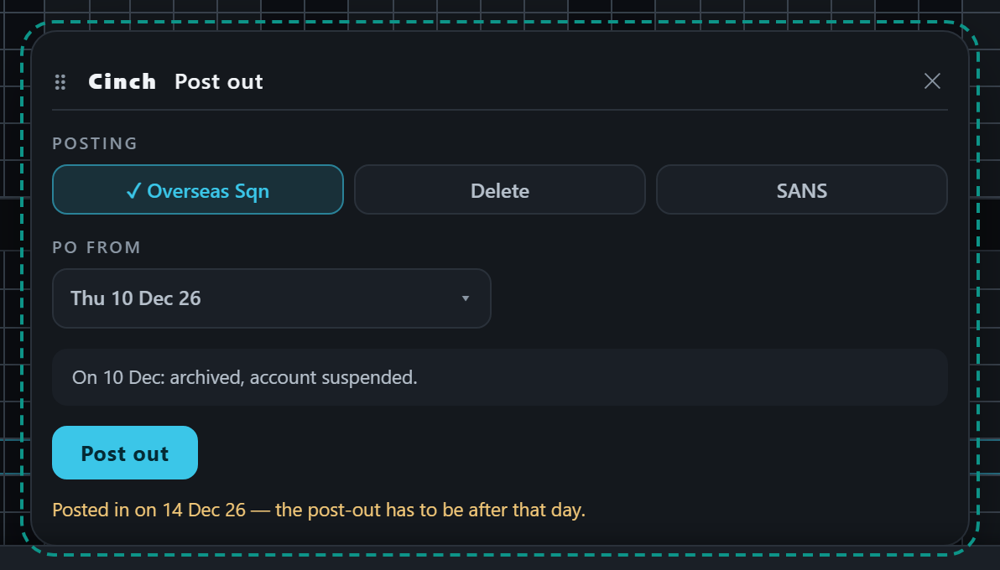
An error: Cinch was posted in on 14 Dec and a post-out is tried for 10 Dec. The app's own line under the button: "Posted in on 14 Dec 26 — the post-out has to be after that day."
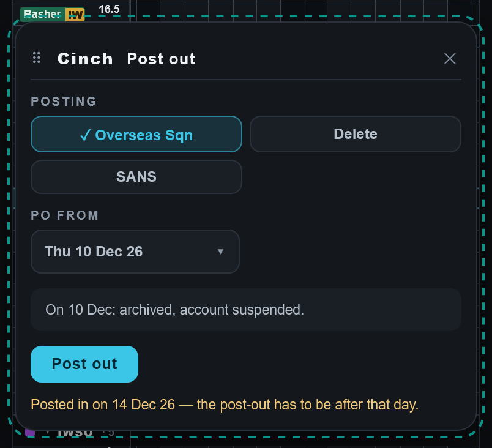
The same, phone.
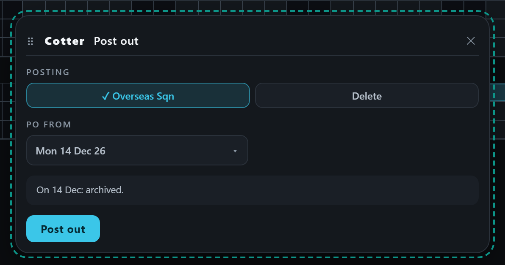
A ground-crew man: Cotter has no SANS, so two choices, Overseas Sqn and Delete. He has no sign-in: "On 14 Dec: archived."
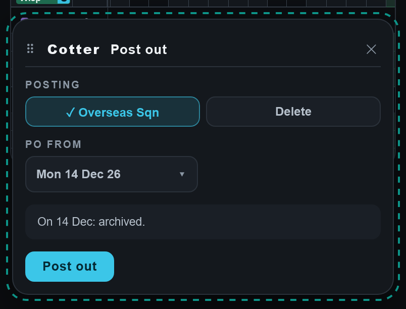
The same, phone.
↑ The list
2. Post out from a dragged range new drawing
Hunter drags across Cinch's 14 to 18 Dec, then ⋯, then "Post out". The same sheet; the range's first day is in "PO from". Its title is Q2.
Desktop.
Phone: on a real phone the range is chosen by touch; the sheet is the same.
↑ The list
3. An existing posting's sheet new drawing
Hunter taps one of Cinch's hatched days. The same look, its foot holding "Undo post out" alone (Q1, drawn with A); "Place leave or OIL here instead…" is removed, as you ruled. For a posted-in man the twin reads "Undo post in".
A post-out, desktop: design A.
A post-out, phone.
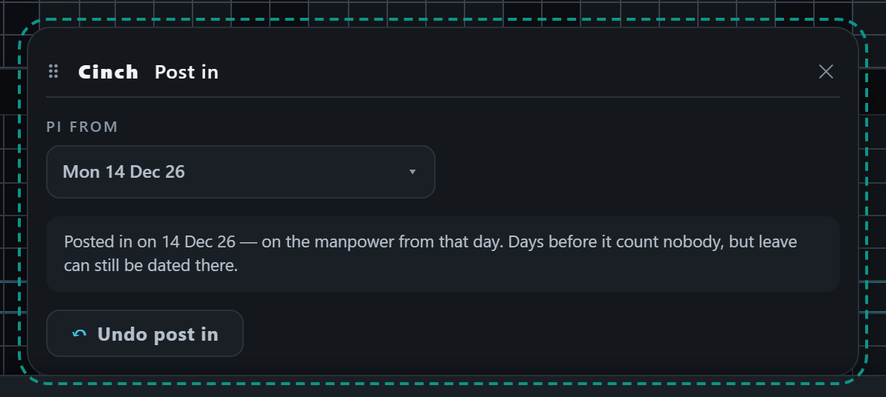
A post-in, desktop: "Cinch Post in", the app's own note about the first day, "Undo post in" in design A.
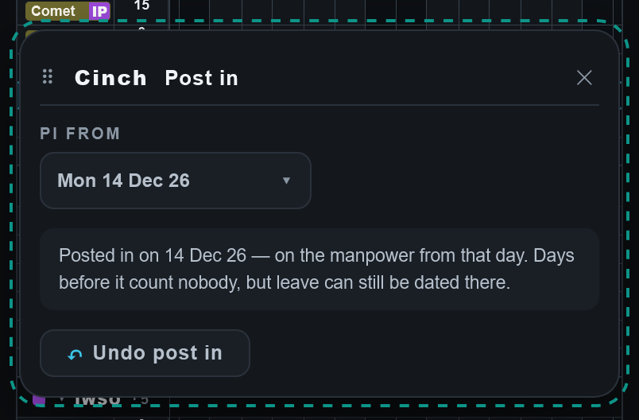
A post-in, phone.
If you pick B or C in Q1, both are redrawn to it before the build.
↑ The list
4. Post in
Hunter presses a day, then ⋯, then "Post in". "Cinch Post in", the date, the app's own note, a blue "Post in".
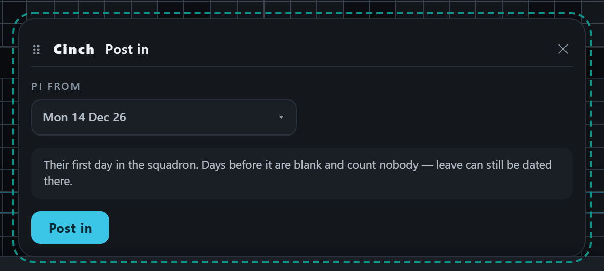
Desktop new drawing: first shown here.
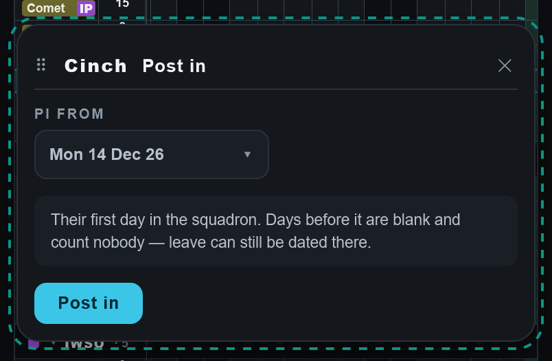
Phone: you approved this in round 6.
↑ The list
Not drawn, and why
- "Transfer to Sqn" chosen, and the "To squadron" list: both come back with the Transfer step, and are drawn and shown to you then.
- The posting form inside a man's row on Admin → Users: also the Transfer step's.
- The "Delete Cinch?" card on an existing posting, Post in from a dragged range, "back from a posting" on a post-in sheet, and the sheet of a man archived on Admin → Users: the app's own parts in the same new look, nothing else new.
↑ The list